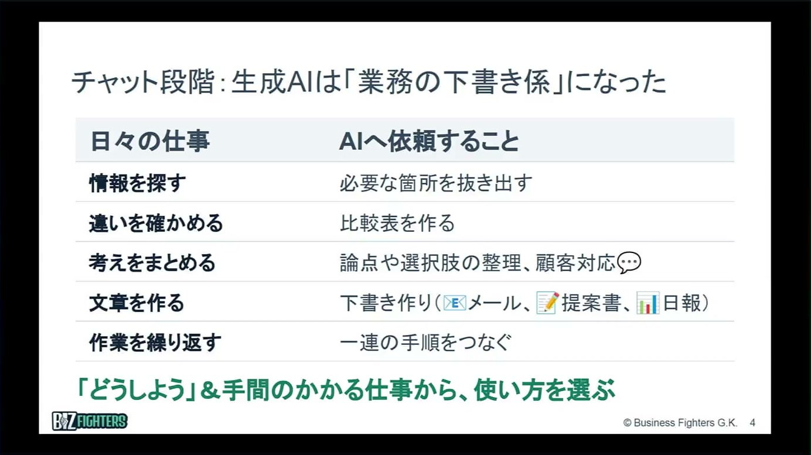
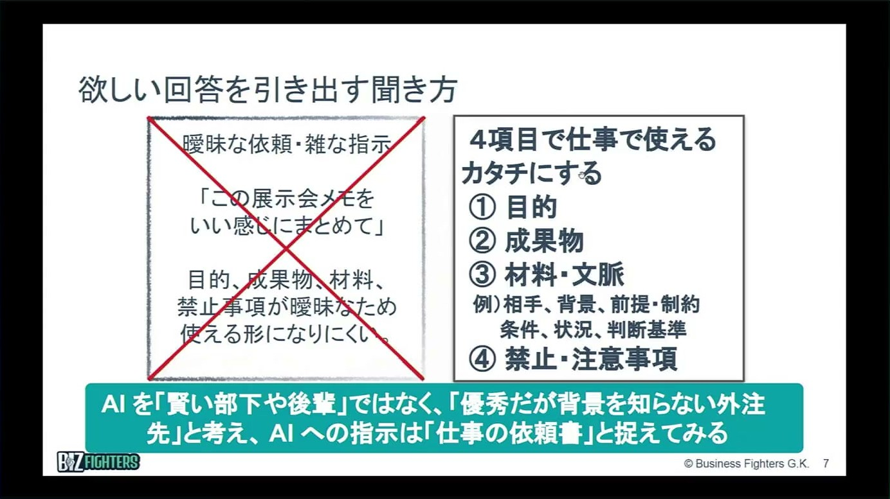
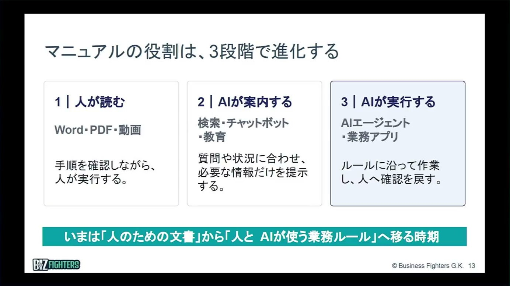

講師紹介

飯田 剛弘氏
ビジネスファイターズ合同会社 CEO／一般社団法人中小企業AI活用協会 代表理事
複数事業の経営・団体運営に携わりながら、AI活用、DX推進、人材育成をテーマに、自治体、公的機関、商工会議所、業界団体、企業向けの講演・研修を全国で実施。現在は、AI活用のアドバイザーや経営顧問としても活動し、中小機構など公的機関で経営相談も担当。著書多数、日刊工業新聞で連載中。
人手不足時代の中小企業に必要な、実践的AI活用ステップ
AIの使い方は「調べる」「作る」から「任せる」へ進んでいます。出発点は、下書きはAI、仕上げは人という役割分担です。中小企業の悩みは、人が足りないことだけではありません。講師の飯田剛弘氏は、単に人数が少ないだけでなく、スキルの偏りが大きすぎると指摘します。ベテランの頭の中にあるコツや判断基準を言葉にして社内で共有すれば、少ない人数でももっとやれます。そのための具体的な使い方と社内への広げ方を、実演を交えて解説した講演です。
複数事業の経営・団体運営に携わりながら、AI活用、DX推進、人材育成をテーマに、自治体、公的機関、商工会議所、業界団体、企業向けの講演・研修を全国で実施。現在は、AI活用のアドバイザーや経営顧問としても活動し、中小機構など公的機関で経営相談も担当。著書多数、日刊工業新聞で連載中。
AIの使い方は段階を追って進んでいます。最初は「ChatGPTにちょっと聞いてみよう」という調べる使い方。慣れるとメールや資料を作る使い方に移り、いまは目的やゴールを伝えれば自分で考えて実行するAIエージェントに任せる段階に入りつつあります。
講師がまず押さえてほしいと話すのが、今のチャットの段階のAIを「業務の下書き係」と捉えることです。情報を探す、違いを確かめる、考えをまとめる、文章を作る、作業を繰り返す。私たちが当たり前に時間をかけている仕事の多くは、AIに下書きを頼めます。

何もない状態から何かを生み出す「0から1」はAIの得意分野で、人はそこが意外に遅いと講師は言います。一方、AIは完成形に仕上げることが苦手で、そこは人の得意分野です。この役割分担を明確にしないと、AIは本領を発揮できません。AIエージェントに任せる段階でも、仕事を明確にして、AIと人のどちらが担うかを決めておくことが土台になります。
実演では、アパレルの営業担当がクレーム対応のメールを書く場面を取り上げました。同僚や上司に相談し、方針を確かめ、文面を考えると、気づけば10分、20分はかかります。AIならその叩き台がすぐにできます。人は、自分の文章の粗には気づきにくくても、他人が作ったものなら、直す所によく気づきます。叩き台をAIに作らせて人が直すと、相談の時間も含めて全体の時間が大きく縮みます。
ゼロから叩き台を作るのはAI、完成形に仕上げるのは人。役割を分けて考えることが、チャットでもAIエージェントでも、AIを使いこなす前提になります。
AIは、社内の誰の力になるのでしょうか。講師は、経験の浅い社員にも、業務を知るベテランにも効くと話します。
実演では、上司の許可を取らずにお客様へ返品・返金を約束してしまった担当者が、上司に直接会って報告するときの伝え方を相談しました。AIは「結論を先に言う」「言い訳をしない」といった助言に加えて、報告の台本や、報告前に準備しておくことのチェックリストまで作ります。
商談でも同じです。事前に、お客様から出てきそうな答えにくい質問をAIに挙げてもらい、答え方を一緒に用意しておけば、経験が浅くても話の運び方の準備ができます。
中小企業ほど、営業が社長や一部の上司しかできないという課題があります。こうした使い方で、何とかやれる人が増えていきます。求められている水準が70点で十分なら、AIを使いこなす若い社員でも届く、というのが講師の見方です。
一方で、若手がAIで資料を作れても、中身を質問されると答えられない、という相談も多いそうです。業務を分かっていないからです。
実演では、約500件の売上データについて「販売金額のトップ30を黄色でハイライトして」とAIに日本語で指示し、講師が話している間に作業が終わりました。講師によれば、AIがExcelの作業を少しずつできるようになったのは今年からで、去年まではできなかったといいます。
こうなると大事なのは、Excelの腕前ではなく、データを生かしてどう業務を変えるかという業務知識です。50代でITが苦手なベテランでも、日本語で頼めば自分で仕事を進められます。
「生成AIを学んでいるとプロンプトの書き方が大事だと言われますが、今それほど重要ではなくなってきています」と講師は言います。2、3年前まではとても大事でしたが、AIが賢くなり、大まかな指示でもある程度動くようになったためです。

代わりに鍵になるのが、相手・背景・前提・状況・判断基準といった材料・文脈です。中途採用で優秀な人が入っても、仕事の進め方や人間関係を知らなければ、すぐには成果を出せません。AIも同じで、実情を知らないから一般的なものしか作れないのです。
講師は、AIを「賢い部下や後輩」ではなく「優秀だが背景を知らない外注先」と考え、AIへの指示は「仕事の依頼書」と捉えるよう勧めます。賢い部下なら「言わなくても分かるよね」が通じますが、AIには言わないと伝わりません。
実演は、創業20周年を迎える金型メーカーの記念イベントの企画です。最初の指示では、感謝の会やオープンファクトリー、商談会・技術展といった、誰でも思いつきそうな案が並びました。そこで「うちの社長は野球が大好きで、ユニークなものが好き」と伝えると、社長の特徴を捉えた企画に変わります。
情報を渡さなければ、AIを使っても誰もが同じような案を出すだけです。自社ならではの情報を共有することが差になります。
相手の情報の渡し方はいろいろあります。相手がどんな人かを伝えるほか、これまでのメールのやり取りを見せれば、その人に合わせた書き方をしてくれます。地元の方には地元の言葉、外国人の従業員やお客様には外国語と、相手に合わせて表現を変えるのもAIの得意分野です。翻訳も、仕事を分かっている人が訳すような質になると講師は話します。
プログラマーでなくても、日本語で「こんなものを作って」と頼めば、アプリやツールが作れる時代に入り始めています。これまでIT業者に費用をかけて頼んでいたものを、中小企業や個人事業主でも自分たちの発想で作れるようになりました。講師が紹介した例は次の3つです。
マクロの実演で、講師は「人生初めてなので、初心者でも分かるように具体的かつ丁寧に教えて」と頼みました。AIは、ファイルのバックアップを取るところから、Altキーを押しながらF11を押す操作まで、手取り足取り案内してくれます。
ここで講師が強調したのが、これまでの常識との違いです。どうやるかを理解してから計画を立てる、という進め方では、AIの進化の速さに追いつけません。今日教わったやり方が、半年後や1年後には古くなっているかもしれません。だから、やり方（How）はその都度AIに聞きます。リーダーは「なぜやるのか」「目的は何か」という方向性を示すことに力を注ぐ、というのが講師の考えです。
やり方はその都度AIに聞き、リーダーは「なぜやるのか」「何のためか」を示します。やり方は変わり続けるからです。
今いるメンバーで会社を回すために講師が特に大事だと話すのが、属人化を減らすことです。人が足りないことだけでなく、仕事が特定の人に偏っていることも、少ない人数で回すことを難しくしています。
今のAIは、文字にしていない情報も材料にできます。実演では、展示会のブースで書いた手書きの打ち合わせメモを写真に撮って渡し、「やることを整理して」と頼むと、優先順位を付けたやることの一覧ができ、続けてお礼のメールの下書きまで作りました。
現場の写真を見せて「何をしていると思うか」と聞けば、作業の内容を言葉にしてくれます。違っていれば人が正せばよく、そのうえで手順書を作れば、一般論ではない自社の内容になります。
音声も同じです。Windowsのパソコンなら、Windowsキーを押しながらHキーを押すだけで、話した内容が文字になります。Windowsに標準で付いている機能です。先輩や職人さんから5分、10分と教わる時間には、貴重なコツが詰まっています。聞いた人の頭の中に残るだけでは属人化の延長ですが、言葉にして共有すれば会社の資産になり、少ない人数でももっとやれるようになります。
音声で記録を残すと、ムダな時間も減ります。話した内容をその場で要点にまとめ、相手と確認してメールで送れば、あとで「どこに書いたっけ」と探す手間も省けます。探すことは価値を生まない行為だと講師は言います。仮に毎時間1分探し物をすると、1日8時間で8分、5日で40分。30秒減らせるだけで20分ほど生み出せる計算です。
ムダを減らせる典型的な例が議事録だと講師は言います。1時間の打ち合わせの議事録を録音から真面目に作ると1時間、2時間かかるところ、AIを使えば5分、10分で終わります。
現場の説明を録音して整理すれば、引き継ぎメモになります。特に大事なのが判断基準です。「この場合はどうするか」は本人の頭の中にあっても、言葉になっていなければ、手順書どおりに進めても迷ってしまいます。言葉にした判断基準は、人に仕事を頼むときにも、AIに任せるときにも生きます。

講師によれば、マニュアルは作ること自体より、作る過程で業務の流れや暗黙知が見えてくることに価値があります。役割も「人が読む」から「AIが案内する」「AIが実行する」へ進みます。
2段階目の「AIが案内する」の例として、実演では、先輩が作った業務トラブルのQ&AをAIに読み込ませ、「機械から変な音がする」と質問すると、その資料に沿った答えが返ってきました。社外の資料でも同じ使い方ができ、何十ページもある補助金の公募要領を先に読ませて、締め切りや計画書に書くことを質問することもできます。
最後に、会社として生成AIをどう広げていくかです。大事なのは、使う前にルールを決めることと、面倒な仕事から試して効果を測ることの2つです。
まずはルールづくりです。個人情報や機密情報は入れない、この情報なら入れてよい、という線引きを会社としてある程度決めておきます。決めていないと、会社の方針としてAIを使うと決めていても、現場は「このデータをいじっていいのか」と悩み、情報漏洩が怖いので使わなくなります。特に製造業で多いそうです。無料版は入力した情報がAIの学習に使われる可能性があるため、有料版や法人版を使うよう講師は勧めています。
出す側のルールも要ります。部内での共有なら問題がなくても、プレスリリースのように社外に出すものは、たとえば2人で確認してから出す、といった体制を決めます。AIエージェントの時代には、どのデータに触れてよいか、読むのはよいが編集や送信はだめ、といった権限のルールも段階的に決めていくことになります。
| リスク | 起きること |
|---|---|
| 入力リスク | 入力してはいけない情報を渡す |
| 出力リスク | 誤情報、抜け、偏り、類似表現が含まれる |
| 実行リスク | 誤った内容を送信、登録、削除する |
| 管理リスク | 確認者、記録、停止方法が決まっていない |
講演のスライドは「リスクはAIだけで決まらない」とし、情報×利用方法×権限×管理方法で考えるよう示していました。実行リスクと管理リスクは、AIエージェントの時代の話として、講演では触れるにとどめました。
AIは進化が速く、導入前に費用対効果を計算しようとしても難しいと講師は言います。やってみて初めて「こんなメリットがあった」と気づくことが多いからです。だから、まず触って試すことが現実的です。
最初に選ぶのは、本来やりたいことより、思った以上に時間がかかっている面倒な仕事が良いと講師は言います。「これは楽になる」と体感できれば、社員はどんどん使うようになるからです。スライドでは、自社で試す仕事を決めるときの問いが次のように示されました。
使い始めたら効果を測ります。AIを使っているのに売上が上がらない、という相談は多いそうです。まずは時間と品質で比べてみることです。スライドでは、依頼の準備や確認・手直しを含めた仕事全体の時間、そのまま使えるかという品質、利用料や設定の維持などの運用の負担、の3つの観点が示されました。
もう一つ大事なのが、生まれた時間を何に使うかをリーダーが示すことです。現場で時間が減っても、それだけで売上や利益になるとは限りません。儲けるためにどう使うかを、リーダーと現場で共有する必要があります。
スモールスタートは手段であって、大事なのは早い成功体験です。面倒な仕事が楽になったという体験が、社内に広げる力になります。
AIは、会話をしたり、カメラで人の動きを見たりできるところまで進化しています。進化が速いからこそ、触り続けることがいちばんです。そして「こんなことができるようになった」という気づきを個人でためずに社内で共有すれば、実務で使える使い方が社内に広がっていきます。
※ 本資料はセミナー講演をAIで再構成したものです。記載の数値・見解は講演時点のものであり、特定の取り組みの結果を保証するものではありません。